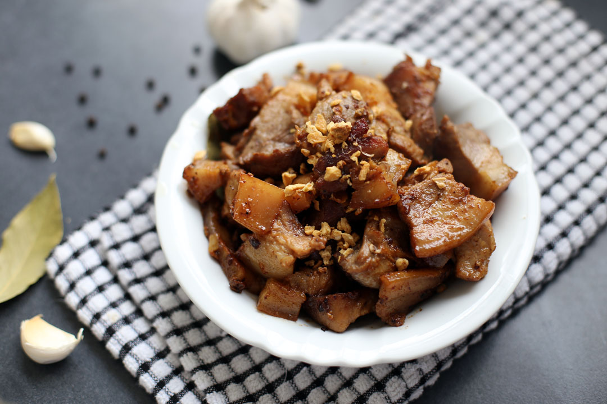

Adobo is mainly made out of meat, soy sauce, vinegar and garlic, without one of them it cannot be called an adobo except for this, Adobo sa puti.
Basically adobo sa puti is a similar dish sans soy sauce, I am not sure about its origins but my wild guess is that this was created by someone who planned to make adobo and found out there was no soy sauce, instead of buying one to save money he used salt as a replacement.